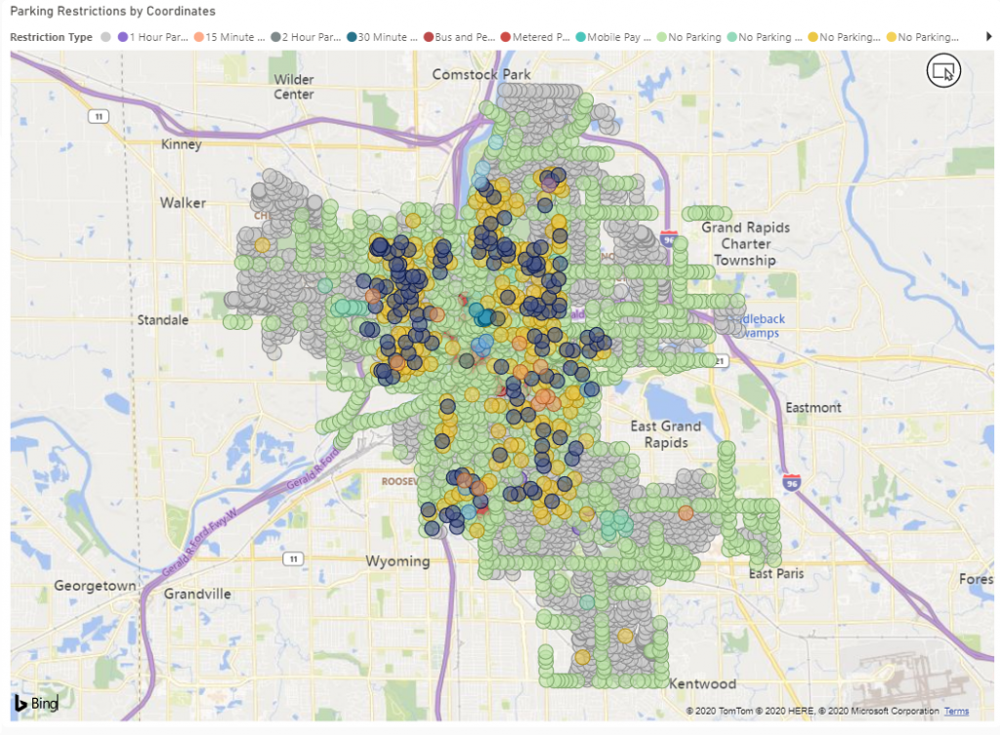
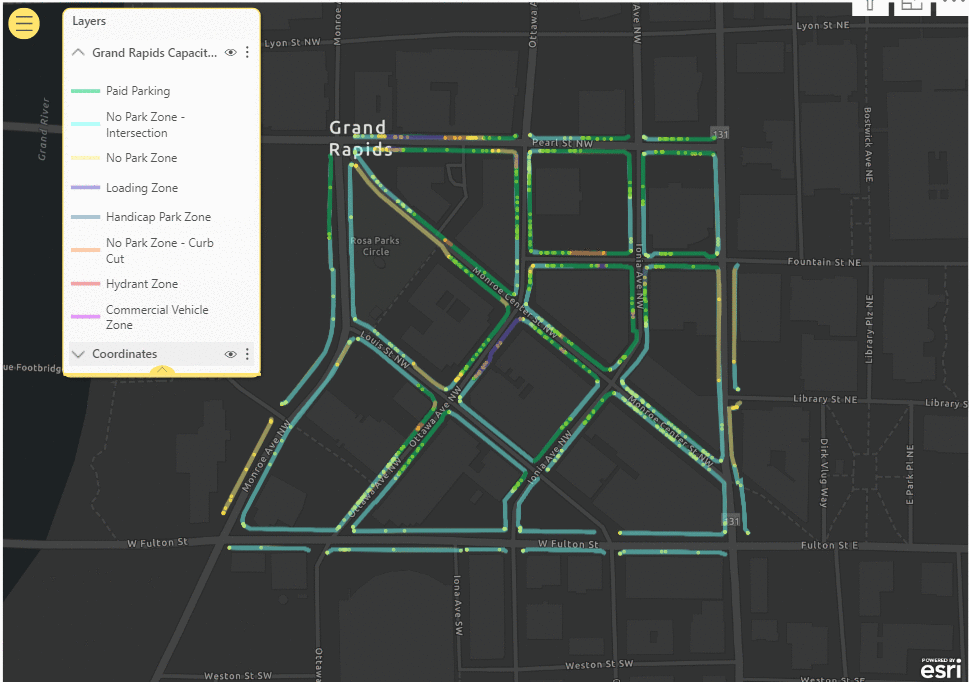
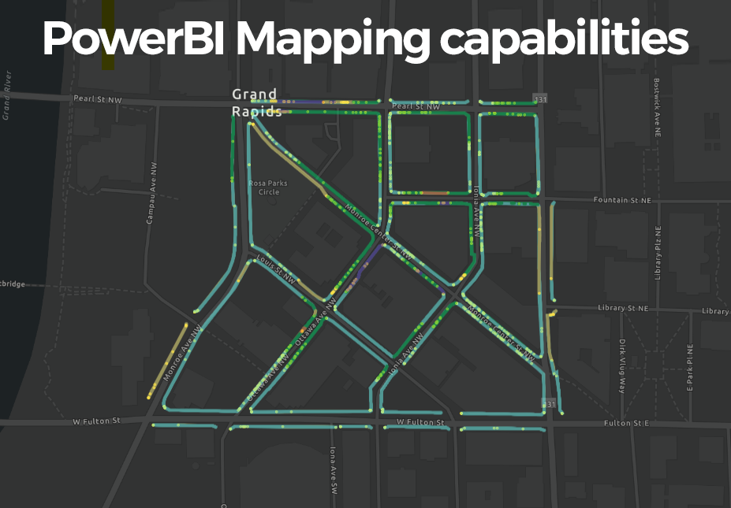
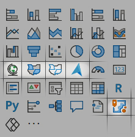
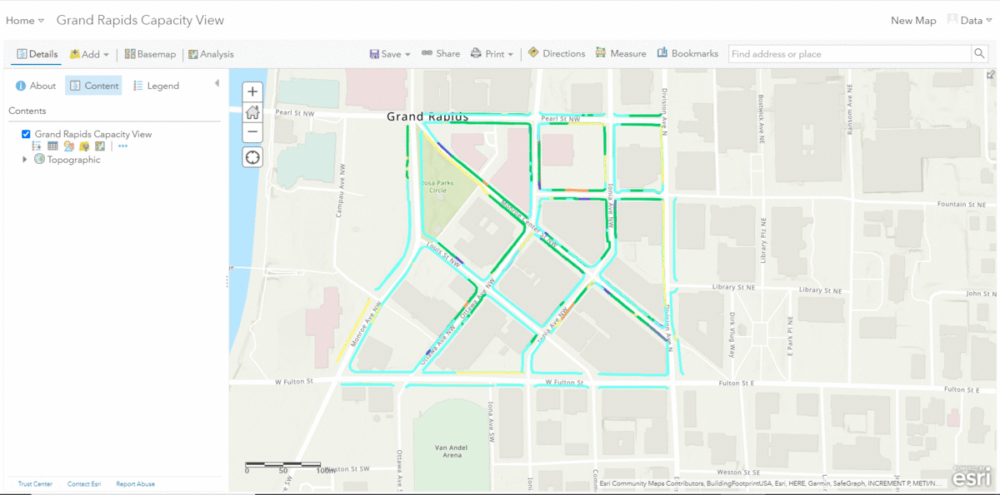
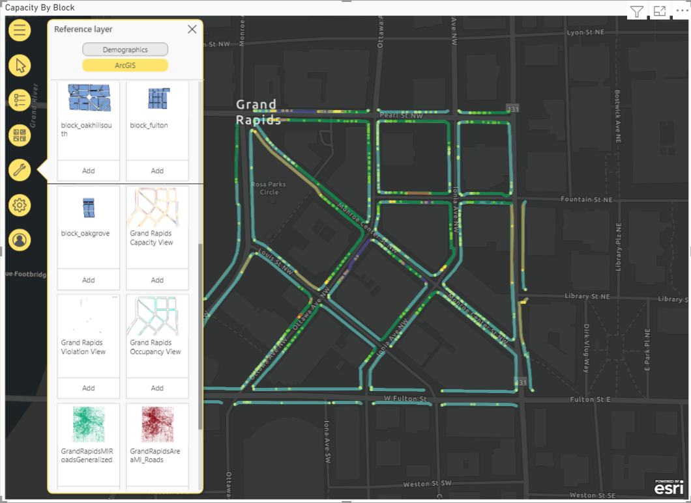

Plotting lines on maps in Power BI with the default map visuals is impossible. A typical map where you plot out some spatial data looks like below.

Luckily, ESRI have integrated their powerful ArcGIS map into Power BI but few Power BI developers are aware of what possibilites this opens up.
ArcGIS is a very powerful spatial representation tool. I do not have the expertise to go through all the details of product. There is such a thing as a GIS developer and these people work with spatial data and visualizations all the time. I'm not one of them. You can check out the ESRI website for more details.
One of the most powerful features of ArcGIS, and the one that we'll use to solve our problem, is that you can create your own map layers. For this, you need to use ESRI's ArcGIS Online.
So let's dive in and see a step-by-step short walkthrough of how to use ArcGIS to add lines on maps and use them in Power BI as in the gif below.


PowerBI has quite a few mapping options for visualizing spatial data. It can work with latitudes, longitudes, country, city, street names, zip codes.
There are currently 5 standard map visualizations available in PowerBI, including the rather new Azure map.

Add to these a few other community maps and whatever maps you can create in D3, R or Python and you’ve got a pretty good selection of maps for your geographic data.
Still, there are a few limitations with the current options – unless you heavily code your custom maps. One of which is the inability to map polylines or linestrings, as they are called, in GeoJSON files.
GeoJSON files geometry types are: Point, LineString, Polygon, MultiPoint, MultiLineString, and MultiPolygon – https://geojson.org/.
Mapping points and polygons are fairly easy with the standard maps and community maps.

Mapping linestrings is not as straightforward and linestrings are really the only correct way of visualizing some geographic data like driving routes or street parking spaces.
We recently worked on a project where we needed to map out parking spaces. We explored our no-code options. The first one was the Azure map. We managed to create this map below. How did we do it? We just added the geojson dataset as a reference layer which mapped out the lines in that sky-blue color.
The reference layer is boring, though. It’s just…well…a reference layer. You cannot interact with it, you can’t color it by a legend and you can’t cross-filter it with from slicers or other charts. It’s just a static, albeit correctly charted, image on your map.

After more investigation and still wanting to go no-code we landed on ESRI’s ArcGIS online service. After creating a trial account and fiddling around we managed to create a reference layer that we could customize to our needs. We then realized we had to publish the layer publicly on ArcGIS so we could then import it as a reference layer in PowerBI.


Like that, we managed to create a better, richer reference layer that:
The current limitations we found are as follows:
This is surely better than nothing, but it still leaves a lot to want. So the search for lines on maps continues and it might be that the only robust option right now is the one you code yourself.